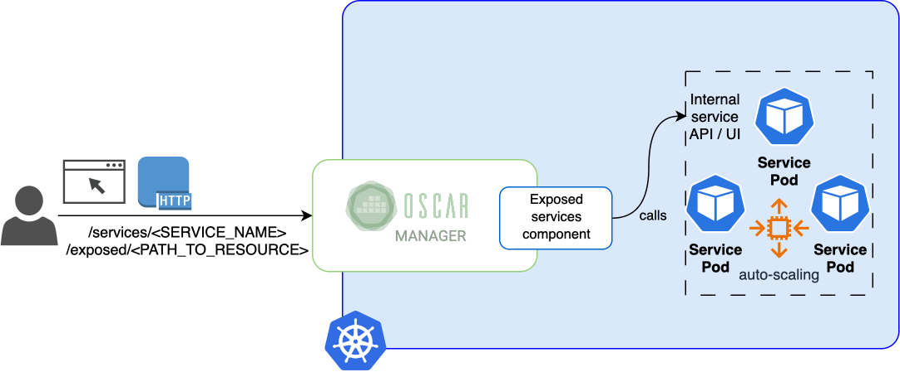

Exposed Services
OSCAR supports the deployment and elasticity management of long-running stateless services whose internal API or web-based UI must be directly reachable outside the cluster.
ℹ️
This functionality can be used to support the fast inference of pre-trained AI models that require close to real-time processing with high throughput. In a traditional serverless approach, the AI model weights would be loaded in memory for each service invocation. Exposed services are also helpful when stateless services created out of large containers require too much time to start processing a service invocation. By exposing an OSCAR service, the AI model weights could be loaded just once, and the service would perform the AI model inference for each subsequent request.

An auto-scaled load-balanced approach for these stateless services is supported. When the average CPU exceeds a certain user-defined threshold, additional service pods are dynamically created (and removed when no longer necessary) within the user-defined boundaries. The user can also define the minimum and maximum replicas of the service to be present on the cluster (see the parameters min_scale and max_scale in ExposeSettings).
Prerequisites in the container image
The container image needs to have an HTTP server that binds to a specific port (see the parameter port in ExposeSettings). If developing a service from scratch in Python, you can use FastAPI or Flask to create an API. In Go, you can use Gin. For Ruby, you can use Sinatra.
⚠️
If the service exposes a web-based UI, you must ensure that the content cannot only be served from the root document ('/') since the service will be exposed in a certain subpath.
How to define an exposed OSCAR service
The minimum definition to expose an OSCAR service is to indicate in the corresponding FDL the port inside the container where the service will be listening.
expose:
api_port: 5000
Once the service is deployed, you can check if it was created correctly by making an HTTP request to the exposed endpoint:
https://{oscar_endpoint}/system/services/{service_name}/exposed/{path_resource}
Notice that if you get a 502 Bad Gateway error, it is most likely because the specified port on the service does not match the API port.
Additional options can be defined in the "expose" section of the FDL (some previously mentioned), such as:
min_scale: The minimum number of active pods (default: 1).max_scale: The maximum number of active pods (default: 10) or the CPU threshold, which, once exceeded, will trigger the creation of additional pods (default: 80%).rewrite_target: Target the URI where the traffic is redirected (default: false).NodePort: The access method from the domain name to the public ip<cluster_ip>:<NodePort>.default_command: Selects between executing the container's default command and executing the script inside the container. (default: false, it executes the script)set_auth: The credentials are composed of the service name as the user and the service token as the password. Turn off this field if the container provides its own authentication method. It does not work withNodePort(default: false, it has no authentication).
Below is an example of the expose section of the FDL, showing that there will be between 5 to 15 active pods and that the service will expose an API in port 4578. The number of active pods will grow when the use of CPU increases by more than 50% and the active pods will decrease when the CPU use decreases below that threshold.
expose:
min_scale: 5
max_scale: 15
api_port: 4578
cpu_threshold: 50
set_auth: true
rewrite_target: true
default_command: true
In addition, you can see below a full example of a recipe to expose a service from the AI4EOSC Marketplace:
functions:
oscar:
- oscar-cluster:
name: body-pose-detection
memory: 2Gi
cpu: '1.0'
image: deephdc/deep-oc-posenet-tf
script: script.sh
environment:
Variables:
INPUT_TYPE: json
expose:
min_scale: 1
max_scale: 10
api_port: 5000
cpu_threshold: 20
set_auth: true
input:
- storage_provider: minio.default
path: body-pose-detection/input
output:
- storage_provider: minio.default
path: body-pose-detection/output
So, to invoke the API of this example the request will need the following information,
- OSCAR endpoint.
localhostorhttps://{OSCAR_endpoint} - Path resource. In this case, it is
v2/models/posenetclas/predict/. Please do not forget the final/ - Use
-kor--insecureif the SSL is false. - Input image with the name
people.jpeg - Output. It will create a
.zipfile that has the outputs
and will end up looking like this:
curl {-k} -X POST https://{oscar_endpoint}/system/services/body-pose-detection-async/exposed/{path resource} -H "accept: */*" -H "Content-Type: multipart/form-data" -F "data=@{input image};type=image/png" --output {output file}
Finally, the complete command that works in Local Testing with an image called people.jpeg as input and output_posenet.zip as output.
curl -X POST https://localhost/system/services/body-pose-detection-async/exposed/v3/models/posenetclas/predict/ -H "accept: */*" -H "Content-Type: multipart/form-data" -F "data=@people.jpeg;type=image/png" --output output_posenet.zip
Another FDL example shows how to expose a simple NGINX server as an OSCAR service:
functions:
oscar:
- oscar-cluster:
name: nginx
memory: 2Gi
cpu: '1.0'
image: nginx
script: script.sh
expose:
min_scale: 2
max_scale: 10
api_port: 80
cpu_threshold: 50
In case you use the NGINX example above in your local OSCAR cluster, you will see the nginx welcome page in: http://localhost/system/services/nginx/exposed/.
Two active pods of the deployment will be shown with the command kubectl get pods -n oscar-svc
oscar-svc nginx-dlp-6b9ddddbd7-cm6c9 1/1 Running 0 2m1s
oscar-svc nginx-dlp-6b9ddddbd7-f4ml6 1/1 Running 0 2m1s